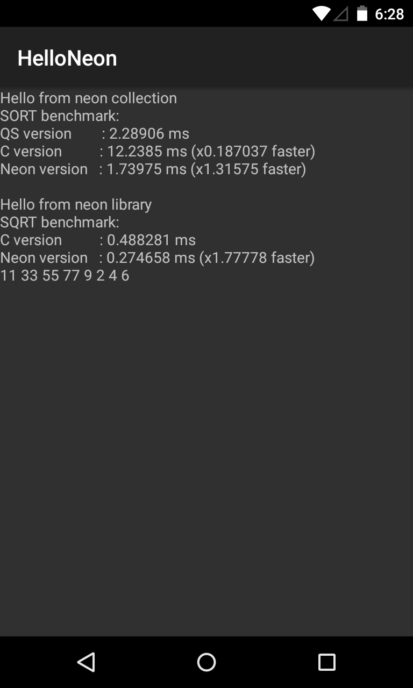

Project Checkpoint
Work Completed
Envorinment Set Up
Build the Android Studio Develop Environment
Setup the android native language development kit (NDK), which allows us to implement parts of your app using native-code languages such as C and C++.
Enable the ARM Advanced SIMD: neon. The NDK supports the ARM Advanced SIMD, an optional instruction-set extension of the ARMv7 spec. NEON provides a set of scalar/vector instructions and registers (shared with the FPU) comparable to MMX/SSE/3DNow! in the x86 world.
NEON Warm Up
We write some simple neon functions and pack it to neon library (.aar file) for other developer to use: addition/minus/multiple of two vector, sqrt function in 15418 assignment 1.
Implement Algorithms
We developed some algorithms and compare them with serial version or other method in Java / C: write a sort algorithm (AA-sort) in SIMD, it is 3x times quicker than serial version and 1.5x quicker than C version quick sort; we also developed a matrix multiply library for int, float and short data. The SIMD version is about 1.5x faster than serial version.

Foresee
Here we want to implement two relative completed and useful parallel library: NeonCollection and NeonMatrix.
NeonCollection is a general purpose paralle library including some common but faster algorithms for vector,
including sorting, scanning, and fast Fourier transform. Besides, this collection also include window filter (convolution)
so that we can use this library to blur a picture and so on.
NeonMatrix is a special purpose parallel library for matrix manipulation. Although this is a very mature technology and
can hardly be exceed, we want to explore the benefit that neon (SIMD) can bring for CPU processing. What's more, it is
relative useful in Andoird development. We want to use this library to do the same function (convolutoin) as NeonCollection
and compare the difference between them.
Finally, there are some limitation in smart phone: limited energy and bad computation ability. So we need to inspect the
energy consumption as well as the performance after the implementation. Here we want to set serial code as baseline for our
further implementation and test.
Final Deliverable
We want to show analysis of the energy consumption and efficiency. If it works well, we also want to implement a interesting application that using our library, which can show in the presentation.
References
-
AA-Sort: A New Parallel Sorting Algorithm for Multi-Core SIMD Processors